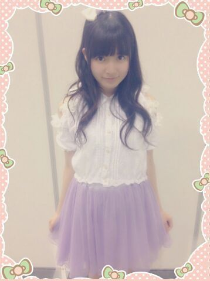

| 2014/06 25 Wed | ひめたん-OoO-その454 |
8th横浜個握！
今回の握手会は警備体制が厳しくなって
そのためにみなさんに
嫌な思いをさせてしまったかもしれません
そんな中でも来てくれて
本当にありがとうございます！
握手会が中止になったら
どうしようって心配もしていたのですが
みなさんの協力のおかげで
開催することができました(＾ω＾)感謝！
ひめたんは
1部、2部、3部に参加しました
1部、2部

3部

万理華とあすかりんとおそろっちー
BOMB5月号の衣装です／(^o^)＼
BOMBさんありがとうございますー♪
ヘアは
1部 巻きおろし
2部 サイドハーフアップ
3部 ハーフアップ
2部と3部の違いは
写メ見たらわかるかなー？
1部に来てくださった方が
「あれ？りぼんは？」ってなってたけど
1部は結ばないのがマイルールです◎
握手会くらいは冒険したいからねー
いつもツインばっかで見飽きたよーって方は
ぜひ個握に遊びに来てみてね←釣りったん
1ヶ月ぶりだったんかな？
何だか久々ーな感じで楽しかったなー
はじめましての方も
たくさん来てくださって
嬉しいかったよ！
そうそう、警備が厳しくなった関係で
推しタオルとか、名札とか、会員証とか、
何かを首に巻いたりができなかったみたいで。
名札や会員証はクリップで留めてる方は
問題ないみたいだから
よかったらお試しあーれヽ(・∀・)ノ
前回の乃木ののは
みおちゃん (堀未央奈ちゃん)
さゆりんご (松村沙友理ちゃん)でした！
文化放送はおやすみだったので
ラジオ福島、青森放送、山梨放送のみの
オンエアでした(´ω`)
みなさん聴いてくれたかなー？
プリンシパルのことを話したり
コーナーも充実して
なかなか楽しい時間をお届けできたかなーと
自分で言ってみちゃう←
進行はまだまだだけどね(´・ω・｀)
ほら！意欲はあるの！
技術が追いついてないだーけ！笑
次回の乃木ののは
ろってぃー (川村真洋ちゃん)
かなりん (中田花奈ちゃん)です☆
お楽しみにっ
今日は
陽菜ちゃん (川後陽菜ちゃん)とふたりで
開運音楽堂の収録曲をしてきました！
チェックしてみてねーよろしくねー♪
それから
Cool up girl's vo.2は
28日発売です＼(^o^)／
こちらは あすかりん (齋藤飛鳥ちゃん)とふたり！
個人PVダイジェスト盤の感想
ありがとうございます！
発売日になったら
個人PVのエピソードたくさん書きたい......♪
とってもステキな現場だったんだよ(＊^ω^＊)

 毎年地元で流しそうめんをやるのですが、
毎年地元で流しそうめんをやるのですが、
ひめたんを流してもいいですか？？
ウォータースライダー((( OωO )))
ひめたんが本気で怒ったらどうなりますか？
地球が爆発する...？
本気で怒った時は無になります
1番怖いやーつー((( OωO )))
中３組が三姉妹だったら、
長女、次女、末っ子はそれぞれ誰になると思う？
長女......ひめたん
次女......いくちゃん
末っ子......るんるん かなあ
生まれた順だとこうなるけどなあ
ひめたんはなんとなく長女な気がする、なんとなく
いくたんは何故スリーピース？
中3組の3！らしいよー?(^ω^)」
カレーライスかハヤシライスどっちが好き？
カレーかなー
でも辛いのはあんま得意じゃないです。
ひめたは夏は好きですか？
好きじゃないです( >_< )
春>秋>冬>夏ってことで1番嫌い。
薄着は苦手だし、冷房も苦手だし......
夏のいいところ誰か教えて。
ひめたん46は
今日はおやすみさせてください
ごめんね( >_< )
いつもたくさんのコメント
ありがとうございます
アンダーライブのリハ真っ最中！
覚えることがいっぱいで
今は毎日ばたばたしてるけど
こーゆーときこそタフでいなきゃ((( OωO )))
何よりライブができるのが幸せ♪
行くよーってみなさん
楽しみにしててくださいねっ
まだ詳しいことは言えないけど
前回のよりも確実に
パワーアップしてます、と思います。
(＊´・ω・＊)
コメント(501)
2014/06/25 00:00